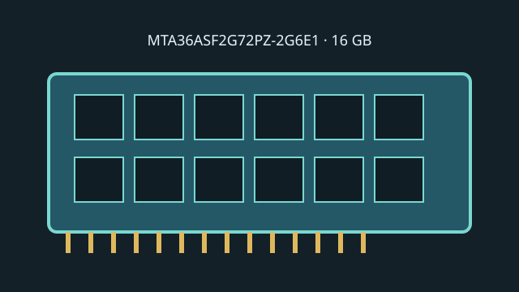

[ MICRON // MODEL RECORD ]
MTA36ASF2G72PZ-2G6E1
Micron's 16 GB 2Rx4 Registered DIMM for DDR4-2666 server platforms. ECC width and registered signaling are both part of this module's interface classification.

Model specifications
| Capacity / module | 16 GB; 288-pin DDR4 Registered DIMM |
|---|---|
| Rank / chip organization | 2Rx4 dual rank, x4 DRAM organization; 72-bit module bus (64 data + 8 ECC). |
| Speed / JEDEC | DDR4-2666, 2666 MT/s (PC4-21300R); JEDEC CL19 at 1.2 V. |
| Voltage | 1.2 V nominal VDD/VDDQ. |
| ECC / buffering | System ECC Registered DIMM (RDIMM) with address/command register. |
| Platform compatibility | Requires a DDR4 server or workstation with RDIMM support, 16 GB 2Rx4 DIMM qualification and CPU rate support. Xeon Scalable 3rd Gen lists DDR4-3200; lower-speed JEDEC modules can run at their SPD rate when supported, but the system QVL, population and firmware govern exact operation. |
Service and compatibility notes
- Do not substitute an ECC UDIMM: the registered signal path requires matching platform support.
- Observe DIMM-per-channel and channel-slot population limits, which may reduce transfer rate.
- Preserve the full suffix, date code and SPD record because module revisions can differ.
Manufacturer & standards sources
- Micron — MTA36ASF2G72PZ-2G6E1 part/SPD recordManufacturer SKU-specific part catalog.
- Micron — RDIMM part catalogManufacturer module product catalog.
- Intel — Xeon Gold 6338 specificationsCPU DDR4 support context; not exact-DIMM qualification.
- JEDEC — JESD79-4 DDR4 SDRAM standard